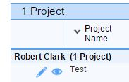

Add/Inventory a Metric
To add a new Metric record, you must first select the View icon of a particular project record.

In the Key Operating Metrics section of the Project record, select the "Add Metric" button.
Initially, the required data elements are:
The rest of the data entry is dynamic.
- Input Method: There are two general types of collection, or input, methods: 1) Direct, and 2) Extract.
- Input Frequency: There are two frequencies of input: 1) Daily, or 2) Weekly. Be advised that if the Input Method is ‘Direct’, the input frequency defaults to Daily and may not be changed.
- Data Source: Data sources are dependent upon the input method.
- Direct input methods may be either a custom web interface or a WORCS application.
- Extract input methods may either be a .csv file uploaded as an attachment in this application or a .csv file uploaded to a secure FTP location, provided by ResCare.
- WORCS App Exist?: If WORCS is selected as the Data Source, specify whether a WORCS app currently exists or not.

Created with the Personal Edition of HelpNDoc: Easily create PDF Help documents